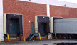
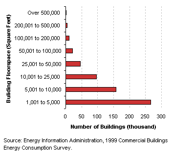
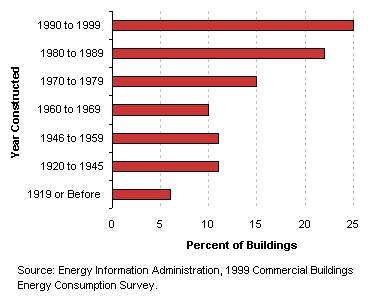
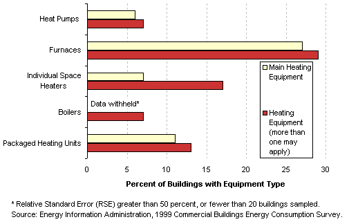
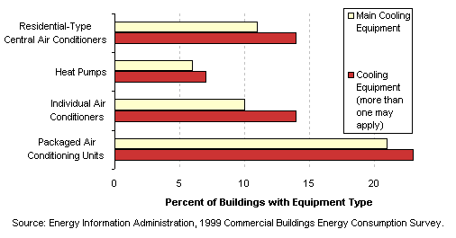
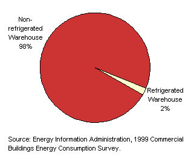
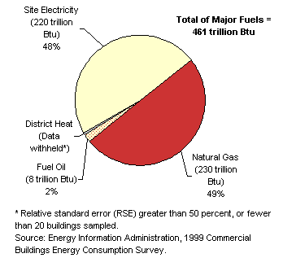

|  |
|
Characteristics
by Activity...
Warehouse
and Storage
|
Warehouse
and storage buildings are those used to store goods, manufactured products,
merchandise, raw materials, or personal belongings.
Basic Characteristics
[ See also: Equipment | Activity
Subcategories | Energy Use
]
| Warehouse
and Storage Buildings...
- While the idea of a warehouse may bring to mind
a large building, in reality most warehouses were relatively small.
Forty-four percent were between 1,001 and 5,000 square feet, and
seventy percent were less than 10,000 square feet.
- Many warehouses were newer buildings. Twenty-five
percent were built in the 1990s and almost fifty percent were
constructed since 1980.
Tables:
Top
|
|
Number
of Warehouse and Storage Buildings by Building Size Category

Warehouse
and Storage Buildings by Year Constructed

|
Equipment
Table: Buildings,
Size, and Age Data by Equipment Types
Predominant
Heating Equipment Types in Warehouse and Storage Buildings

Predominant
Cooling Equipment Types in Warehouse and Storage Buildings

Top
Activity
Subcategories
| Building
respondents who reported that their building was a warehouse and
storage building were then asked whether it was a refrigerated or
non-refrigerated warehouse. Most all were non-refrigerated.
Warehouse and
storage buildings include "self-storage" buildings and
distribution centers.
Table:
Selected
Data by Type of Warehouse and Storage Building
Top
|
|
Warehouse
and Storage Buildings by Subcategory |
Energy
Use
| Warehouse
and storage buildings used 461 trillion Btu of total energy, which
was 8 percent of total energy consumption for all commercial buildings,
though they comprised 16 percent of total commercial floorspace. They
had a low energy intensity—the third lowest of all commercial
building types. |
| Tables:
Reference:
What is a Btu? |
|
Energy
Consumption in Warehouse and Storage Buildings by Energy Source

|
The
total energy consumption data in the figures and tables above are “site
energy,” which includes only the amount of electricity consumed
within the building; energy use can also be expressed as “primary
energy,” which includes the energy consumed during the generation
and transmission of electricity. Warehouse
and storage buildings used 664 trillion Btu of primary electricity, so
their total primary energy consumption was 905 trillion Btu, or 8 percent
of total primary consumption for all commercial buildings.
Top
Specific questions may be directed to:
Joelle Michaels
joelle.michaels@eia.doe.gov
CBECS Manager
Release date: July 24, 2002
Page last modified:
May 4, 2009 2:52 PM
http://www.eia.gov/consumption/commercial/data/archive/cbecs/pba99/warehouse/warehouse.html
If you are having any technical problems with this
site, please contact the EIA webmaster at wmaster@eia.doe.gov. |